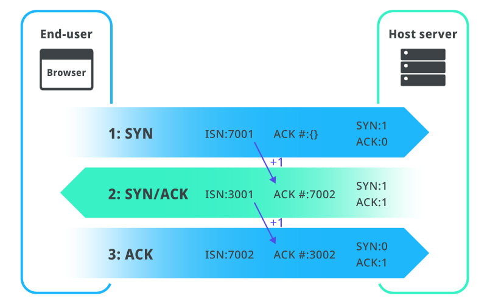

Navigation is the first step of loading a web page. It happens when the user enters a URL in the address bar or clicks on a link.
- 1. DNS lookup
- The Domain Name System (DNS) Server is a server that is specifically used for matching website hostnames (like www.example.com) to their corresponding Internet Protocol or IP addresses. The DNS server contains a database of public IP addresses and their corresponding domain names
-
For example, if you visit www.example.com, the DNS server will return the IP address 93.184.216.34 which is its corresponding IP address. - 2. Three-way TCP handshake
- The next step is to establish a TCP connection with the server. This is done by a 3-way TCP handshake.
-
First, the client sends a request to open up a connection to the server with a SYN packet. The server then responds with a SYN-ACK packet to acknowledge the request & requesting the client to open up a connection. Finally, the client sends an ACK packet to the server acknowledging the request.  - 3. TLS handshake
- If the website uses HTTPS (encrypted HTTP protocol), the next step is to establish a TLS connection via a TLS handshake.
-
- During this step, some more messages are exchanged between the browser and the server.
- Client says hello: The browser sends the server a message that includes which TLS version and cipher suite it supports and a string of random bytes known as the client random.
- Server hello message and certificate: The server sends a message back containing the server's SSL certificate, the server's chosen cipher suite, and the server random (a random string of bytes that's generated by the server).
- Authentication: The browser verifies the server's SSL certificate with the certificate authority that issued it. This way the browser can be sure that the server is who it says it is.
- The premaster secret: The browser sends one more random string of bytes called the premaster secret, which is encrypted with a public key that the browser takes from the SSL certificate from the server. The premaster secret can only be decrypted with the private key by the server.
- Private key used: The server decrypts the premaster secret.
- Session keys created: The browser and server generate session keys from the client random, the server random, and the premaster secret.
- Client finished: The browser sends a message to the server saying it has finished.
- Server finished: The server sends a message to the browser saying it has also finished.
- Secure symmetric encryption achieved: The handshake is completed and communication can continue using the session keys.